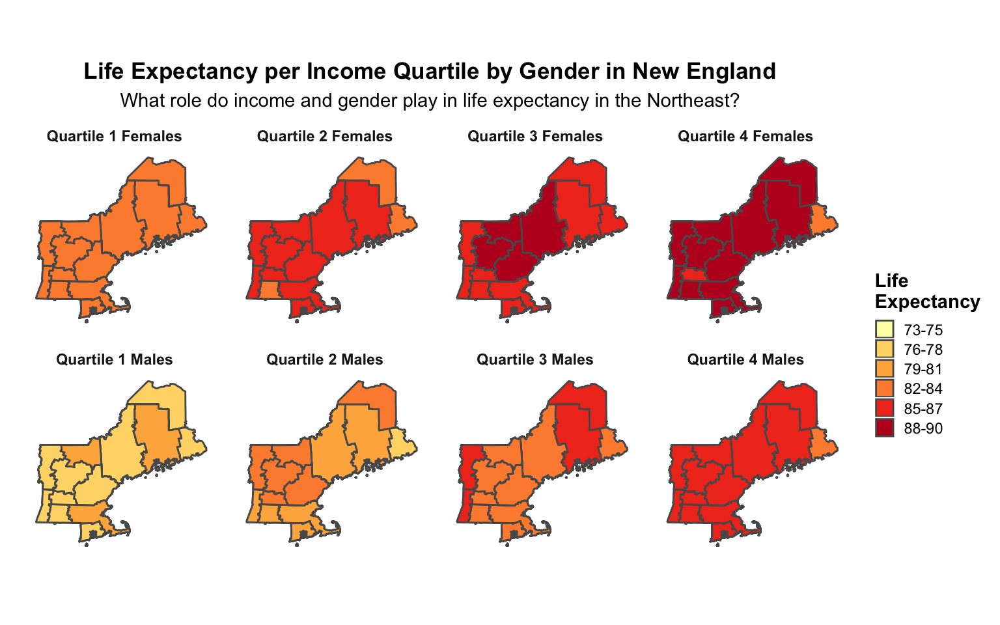

In the current political atmosphere, a hot topic has been universal healthcare access. However, too often the discussion leaves out the substantial role that income plays in shaping one’s health outcomes and associated behaviors. This analysis aims to investigate the role of income inequality in such outcomes and health behaviors to further understand what particular health problems plague the poor and why. By doing this, we hope to create the most impactful policy framework to improve the health outcomes and behaviors of the lowest income people. The visualization below shows a preliminary overview of such health outcomes in New England.

This visualization displays the life expectancy of New Englanders in 2000 separated by both sex and income quartile. The lowest income quartile is represented by the number 1, while the highest by the number 4.
There are several key takeaways from this analysis. Firstly, in New England, it appears that life expectancy per income quartile is not equal across gender. This visualization shows that on average, women have a higher life expectancy than men in all income quartiles. Additionally, life expectancy increases by income quartile. Therefore, perhaps unsurprisingly, it appears that life expectancy may be a byproduct of income inequality. To further investigate the particular reasons for this trend, we investigated the particular health behaviors that we thought could be a consequence of income inequality. To read more about our results, click on the more info tab!
The data used in this analysis was taken from a paper entitled “The Association between Income and Life Expectancy in the United States, 2001-2014” by Raj Chetty et al.1 In their paper, the authors constructed income quartiles using income data for the US population through 1.4 billion deidentified tax records between 1999 and 2014. Additionally, mortality data was obtained from Social Security Administration’s death records. As defined by the authors, “data was used to estimate race and ethnicity-adjusted life expectancy at 40 years of age by household income percentile, sex, and geographic area, and to evaluate factors associated with differences in life expectancy”.2
Chetty, Raj, et al. “The Association between Income and Life Expectancy in the United States, 2001 - 2014.” The Equality of Opportunity Project, Opportunity Insights, 2016, www.equality-of-opportunity.org/data/index.html#health.↩
Chetty, Raj, et al. “The Association between Income and Life Expectancy in the United States, 2001 - 2014 Read Me Tables 11 and 12.” Jama Network, American Medical Association, 2016, www.jamanetwork.com/journals/jama/fullarticle/2513561?guestAccessKey=4023ce75-d0fb-44de-bb6c-8a10a30a6173.↩